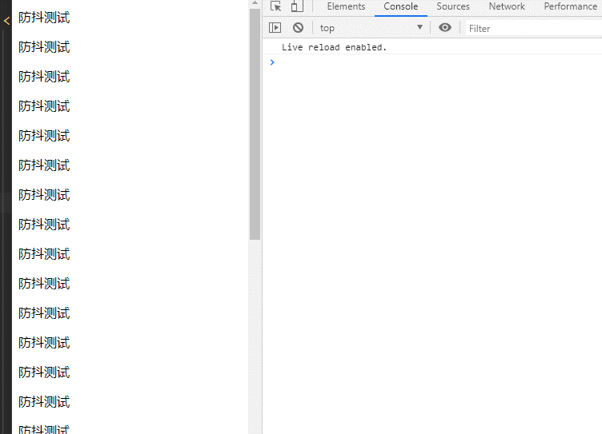
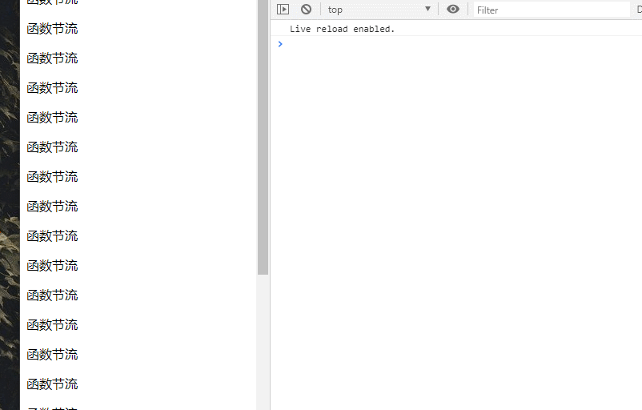
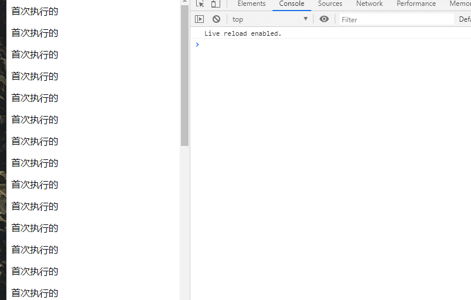

<!DOCTYPE html>
<html lang="en" class="loading">
<head><meta name="generator" content="Hexo 3.9.0">
    <meta charset="UTF-8">
    <meta http-equiv="X-UA-Compatible" content="IE=edge,chrome=1">
    <meta name="viewport" content="width=device-width, minimum-scale=1.0, maximum-scale=1.0, user-scalable=no">
    <title>函数的防抖节流 - Hexo</title>
    <meta name="apple-mobile-web-app-capable" content="yes">
    <meta name="apple-mobile-web-app-status-bar-style" content="black-translucent">
    <meta name="google" content="notranslate">
    <meta name="keywords" content="Fechin,"> 
    <meta name="description" content="防抖什么是防抖？所谓防抖就是防止页面抖动，由于一些方法的无休止的调用使得浏览器的性能损耗，导致页面出现卡顿现象。
要解决防抖就是要控制住函数的调用 如：scroll事件的产生调用某一个方法就会产生性,"> 
    <meta name="author" content="LEE"> 
    <link rel="alternative" href="atom.xml" title="Hexo" type="application/atom+xml"> 
    <link rel="icon" href="/img/favicon.png"> 
    <link rel="stylesheet" href="//cdn.jsdelivr.net/npm/gitalk@1/dist/gitalk.css">
    <link rel="stylesheet" href="/css/diaspora.css">
    <script async src="//pagead2.googlesyndication.com/pagead/js/adsbygoogle.js"></script>
    <script>
         (adsbygoogle = window.adsbygoogle || []).push({
              google_ad_client: "ca-pub-8691406134231910",
              enable_page_level_ads: true
         });
    </script>
    <script async custom-element="amp-auto-ads" src="https://cdn.ampproject.org/v0/amp-auto-ads-0.1.js">
    </script>
</head>
</html>
<body class="loading">
    <span id="config-title" style="display:none">Hexo</span>
    <div id="loader"></div>
    <div id="single">
    <div id="top" style="display: block;">
    <div class="bar" style="width: 0;"></div>
    <a class="icon-home image-icon" href="javascript:;" data-url="http://yoursite.com"></a>
    <div title="播放/暂停" class="icon-play"></div>
    <h3 class="subtitle">函数的防抖节流</h3>
    <div class="social">
        <!--<div class="like-icon">-->
            <!--<a href="javascript:;" class="likeThis active"><span class="icon-like"></span><span class="count">76</span></a>-->
        <!--</div>-->
        <div>
            <div class="share">
                <a title="获取二维码" class="icon-scan" href="javascript:;"></a>
            </div>
            <div id="qr"></div>
        </div>
    </div>
    <div class="scrollbar"></div>
</div>

    <div class="section">
        <div class="article">
    <div class='main'>
        <h1 class="title">函数的防抖节流</h1>
        <div class="stuff">
            <span>六月 13, 2019</span>
            
  <ul class="post-tags-list"><li class="post-tags-list-item"><a class="post-tags-list-link" href="/tags/好技术/">好技术</a></li></ul>


        </div>
        <div class="content markdown">
            <h1 id="防抖"><a href="#防抖" class="headerlink" title="防抖"></a>防抖</h1><h2 id="什么是防抖？"><a href="#什么是防抖？" class="headerlink" title="什么是防抖？"></a>什么是防抖？</h2><p>所谓防抖就是防止页面抖动，由于一些方法的无休止的调用使得浏览器的性能损耗，导致页面出现卡顿现象。</p>
<p>要解决防抖就是要控制住函数的调用 如：scroll事件的产生调用某一个方法就会产生性能损耗。 </p>
<p>怎么防抖，就是做了很多重复的事情我只做一次。</p>
<figure class="highlight plain"><table><tr><td class="gutter"><pre><span class="line">1</span><br><span class="line">2</span><br><span class="line">3</span><br><span class="line">4</span><br><span class="line">5</span><br><span class="line">6</span><br><span class="line">7</span><br><span class="line">8</span><br><span class="line">9</span><br><span class="line">10</span><br><span class="line">11</span><br><span class="line">12</span><br><span class="line">13</span><br><span class="line">14</span><br><span class="line">15</span><br><span class="line">16</span><br></pre></td><td class="code"><pre><span class="line">function debounce(fn, wait) &#123;</span><br><span class="line">    let timeout = null;      //定义一个定时器</span><br><span class="line">    return function() &#123;</span><br><span class="line">        if(timeout !== null) </span><br><span class="line">          clearTimeout(timeout);  //清除这个定时器</span><br><span class="line">        timeout = setTimeout(fn, wait);  </span><br><span class="line">    &#125;</span><br><span class="line">&#125;</span><br><span class="line"></span><br><span class="line">// 处理函数</span><br><span class="line">function handle() &#123;</span><br><span class="line">    console.log(&apos;孤独月&apos;); </span><br><span class="line">&#125;</span><br><span class="line"></span><br><span class="line">// 滚动事件</span><br><span class="line">window.addEventListener(&apos;scroll&apos;, debounce(handle, 1000));</span><br></pre></td></tr></table></figure>

<p>代码如上，我一直滚动但是我就只执行一次，debounce是个闭包，只要timeout不等于null，一直触发scroll就不会执行handle方法，因为定时器一直在清除又启动，只有当你停止滚动1000ms后才会调用一次<br></p>
<h1 id="节流"><a href="#节流" class="headerlink" title="节流"></a>节流</h1><h2 id="什么是节流？"><a href="#什么是节流？" class="headerlink" title="什么是节流？"></a>什么是节流？</h2><p>节流相当于开水龙头，水大了关小，一段时间执行一次，持续触发scroll事件时，并不立即执行handle函数，每隔1000毫秒才会执行一次handle函数。<br>有两种方法进行节流  </p>
<h3 id="①时间戳"><a href="#①时间戳" class="headerlink" title="①时间戳"></a>①时间戳</h3><figure class="highlight plain"><table><tr><td class="gutter"><pre><span class="line">1</span><br><span class="line">2</span><br><span class="line">3</span><br><span class="line">4</span><br><span class="line">5</span><br><span class="line">6</span><br><span class="line">7</span><br><span class="line">8</span><br><span class="line">9</span><br><span class="line">10</span><br><span class="line">11</span><br><span class="line">12</span><br><span class="line">13</span><br><span class="line">14</span><br><span class="line">15</span><br></pre></td><td class="code"><pre><span class="line">const throttle = function(func, delay) &#123;            </span><br><span class="line">　　let prev = Date.now();            </span><br><span class="line">　　return function() &#123;                                </span><br><span class="line">　　　　const now = Date.now();  </span><br><span class="line">        // 由于第一次的prevent是闭包产生的只要两个值的差大于给定的时间就执行方法 然后重新设定prev前一个时间 以此循环        </span><br><span class="line">　　　　if (now - prev &gt;= delay) &#123;                    </span><br><span class="line">　　　　　　func()                   </span><br><span class="line">　　　　　　prev = Date.now();                </span><br><span class="line">　　　　&#125;            </span><br><span class="line">　　&#125;        </span><br><span class="line">&#125;        </span><br><span class="line">function handle() &#123;            </span><br><span class="line">　　console.log(&apos;孤独月&apos;);        </span><br><span class="line">&#125;        </span><br><span class="line">window.addEventListener(&apos;scroll&apos;, throttle(handle, 1000));</span><br></pre></td></tr></table></figure>

<h3 id="②定时器"><a href="#②定时器" class="headerlink" title="②定时器"></a>②定时器</h3><figure class="highlight plain"><table><tr><td class="gutter"><pre><span class="line">1</span><br><span class="line">2</span><br><span class="line">3</span><br><span class="line">4</span><br><span class="line">5</span><br><span class="line">6</span><br><span class="line">7</span><br><span class="line">8</span><br><span class="line">9</span><br><span class="line">10</span><br><span class="line">11</span><br><span class="line">12</span><br><span class="line">13</span><br><span class="line">14</span><br><span class="line">15</span><br><span class="line">16</span><br></pre></td><td class="code"><pre><span class="line">const throttle = function(func, delay) &#123;            </span><br><span class="line">    let timer = null;            </span><br><span class="line">    return function() &#123;  </span><br><span class="line">        //!null =&gt; true 进入条件然后 延迟时间后执行方法 重新将timer赋为null                             </span><br><span class="line">        if (!timer) &#123;                    </span><br><span class="line">            timer = setTimeout(function() &#123;                 </span><br><span class="line">                func()                       </span><br><span class="line">                timer = null;                    </span><br><span class="line">            &#125;, delay);                </span><br><span class="line">        &#125;            </span><br><span class="line">    &#125;        </span><br><span class="line">&#125;        </span><br><span class="line">function handle() &#123;            </span><br><span class="line">    console.log(&apos;孤独月&apos;);        </span><br><span class="line">&#125;        </span><br><span class="line">window.addEventListener(&apos;scroll&apos;, throttle(handle, 1000));</span><br></pre></td></tr></table></figure>

<p></p>
<h3 id="首次就触发的节流"><a href="#首次就触发的节流" class="headerlink" title="首次就触发的节流"></a>首次就触发的节流</h3><figure class="highlight plain"><table><tr><td class="gutter"><pre><span class="line">1</span><br><span class="line">2</span><br><span class="line">3</span><br><span class="line">4</span><br><span class="line">5</span><br><span class="line">6</span><br><span class="line">7</span><br><span class="line">8</span><br><span class="line">9</span><br><span class="line">10</span><br><span class="line">11</span><br><span class="line">12</span><br><span class="line">13</span><br><span class="line">14</span><br><span class="line">15</span><br><span class="line">16</span><br><span class="line">17</span><br><span class="line">18</span><br><span class="line">19</span><br><span class="line">20</span><br><span class="line">21</span><br><span class="line">22</span><br></pre></td><td class="code"><pre><span class="line">// 节流throttle代码（时间戳+定时器）：</span><br><span class="line">const throttle = function(func, delay) &#123;     </span><br><span class="line">    let timer = null;     </span><br><span class="line">    let startTime = Date.now();     </span><br><span class="line">    return function() &#123;             </span><br><span class="line">        const curTime = Date.now();             </span><br><span class="line">        const remaining = delay - (curTime - startTime); </span><br><span class="line">        clearTimeout(timer);              </span><br><span class="line">        if (remaining &lt;= 0) &#123;</span><br><span class="line">            console.log(1)                 </span><br><span class="line">            func()                    </span><br><span class="line">            startTime = Date.now();              </span><br><span class="line">        &#125; else &#123;       </span><br><span class="line">            console.log(2)                </span><br><span class="line">            timer = setTimeout(func, remaining);              </span><br><span class="line">        &#125;      </span><br><span class="line">    &#125;</span><br><span class="line">&#125;</span><br><span class="line">function handle() &#123;      </span><br><span class="line">    console.log(&apos;孤独月&apos;);</span><br><span class="line">&#125; </span><br><span class="line">window.addEventListener(&apos;scroll&apos;, throttle(handle, 1000));</span><br></pre></td></tr></table></figure>

<p>首次执行的时候 变量remaining是大于0的所以会直接执行方法，当remaining小于0，也就是 curTime - startTime &gt;= 1000ms时就执行，<br>也就完成了节流<br></p>
<h1 id="总结"><a href="#总结" class="headerlink" title="总结"></a>总结</h1><p>函数防抖：将几次操作合并为一此操作进行。原理是维护一个计时器，规定在delay时间后触发函数，但是在delay时间内再次触发的话，就会取消之前的计时器而重新设置。这样一来，只有最后一次操作能被触发。</p>
<p>函数节流：使得一定时间内只触发一次函数。原理是通过判断是否到达一定时间来触发函数。</p>
<p>区别： 函数节流不管事件触发有多频繁，都会保证在规定时间内一定会执行一次真正的事件处理函数，而函数防抖只是在最后一次事件后才触发一次函数。 比如在页面的无限加载场景下，我们需要用户在滚动页面时，每隔一段时间发一次 Ajax 请求，而不是在用户停下滚动页面操作时才去请求数据。这样的场景，就适合用节流技术来实现。</p>

            <!--[if lt IE 9]><script>document.createElement('audio');</script><![endif]-->
            <audio id="audio" loop="1" preload="auto" controls="controls" data-autoplay="true">
                <source type="audio/mpeg" src="">
            </audio>
            
                <ul id="audio-list" style="display:none">
                    
                        
                            <li title='0' data-url='http://tyst.migu.cn/public/product5th/product32/2019/05/1013/%E9%A2%84%E7%94%9F%E6%95%88%E5%A5%A5%E8%BF%90%E7%AC%AC46%E6%89%B93500%E9%A6%96_600547/%E6%A0%87%E6%B8%85%E9%AB%98%E6%B8%85/MP3_320_16_Stero/60054700498.mp3'></li>
                        
                    
                        
                            <li title='1' data-url='http://tyst.migu.cn/public/ringmaker01/n17/2017/07/%E9%A2%84%E7%94%9F%E6%95%88%E5%A5%A5%E8%BF%90%E7%AC%AC46%E6%89%B93500%E9%A6%96_600547/%E6%AD%8C%E6%9B%B2%E4%B8%8B%E8%BD%BD/MP3_320_16_Stero/%E5%85%8D%E8%B4%B9%E6%95%99%E5%AD%A6%E5%BD%95%E5%BD%B1%E5%B8%A6-%E5%91%A8%E6%9D%B0%E4%BC%A6.mp3'></li>
                        
                    
                </ul>
            
        </div>
        
    <div id='gitalk-container' class="comment link"
        data-ae='false'
        data-ci='ef8cdeca342133d3a396'
        data-cs='9b18d8920603d70ae9e14b05875281bcbf9e6755'
        data-r='banyeDguduyue.github.io'
        data-o='banyeDguduyue'
        data-a='banyeDguduyue'
        data-d='false'
    >查看评论</div>


    </div>
    
</div>


    </div>
</div>
</body>
<script src="//cdn.jsdelivr.net/npm/gitalk@1/dist/gitalk.min.js"></script>
<script src="//lib.baomitu.com/jquery/1.8.3/jquery.min.js"></script>
<script src="/js/plugin.js"></script>
<script src="/js/diaspora.js"></script>
<link rel="stylesheet" href="/photoswipe/photoswipe.css">
<link rel="stylesheet" href="/photoswipe/default-skin/default-skin.css">
<script src="/photoswipe/photoswipe.min.js"></script>
<script src="/photoswipe/photoswipe-ui-default.min.js"></script>

<!-- Root element of PhotoSwipe. Must have class pswp. -->
<div class="pswp" tabindex="-1" role="dialog" aria-hidden="true">
    <!-- Background of PhotoSwipe. 
         It's a separate element as animating opacity is faster than rgba(). -->
    <div class="pswp__bg"></div>
    <!-- Slides wrapper with overflow:hidden. -->
    <div class="pswp__scroll-wrap">
        <!-- Container that holds slides. 
            PhotoSwipe keeps only 3 of them in the DOM to save memory.
            Don't modify these 3 pswp__item elements, data is added later on. -->
        <div class="pswp__container">
            <div class="pswp__item"></div>
            <div class="pswp__item"></div>
            <div class="pswp__item"></div>
        </div>
        <!-- Default (PhotoSwipeUI_Default) interface on top of sliding area. Can be changed. -->
        <div class="pswp__ui pswp__ui--hidden">
            <div class="pswp__top-bar">
                <!--  Controls are self-explanatory. Order can be changed. -->
                <div class="pswp__counter"></div>
                <button class="pswp__button pswp__button--close" title="Close (Esc)"></button>
                <button class="pswp__button pswp__button--share" title="Share"></button>
                <button class="pswp__button pswp__button--fs" title="Toggle fullscreen"></button>
                <button class="pswp__button pswp__button--zoom" title="Zoom in/out"></button>
                <!-- Preloader demo http://codepen.io/dimsemenov/pen/yyBWoR -->
                <!-- element will get class pswp__preloader--active when preloader is running -->
                <div class="pswp__preloader">
                    <div class="pswp__preloader__icn">
                      <div class="pswp__preloader__cut">
                        <div class="pswp__preloader__donut"></div>
                      </div>
                    </div>
                </div>
            </div>
            <div class="pswp__share-modal pswp__share-modal--hidden pswp__single-tap">
                <div class="pswp__share-tooltip"></div> 
            </div>
            <button class="pswp__button pswp__button--arrow--left" title="Previous (arrow left)">
            </button>
            <button class="pswp__button pswp__button--arrow--right" title="Next (arrow right)">
            </button>
            <div class="pswp__caption">
                <div class="pswp__caption__center"></div>
            </div>
        </div>
    </div>
</div>


</html>
